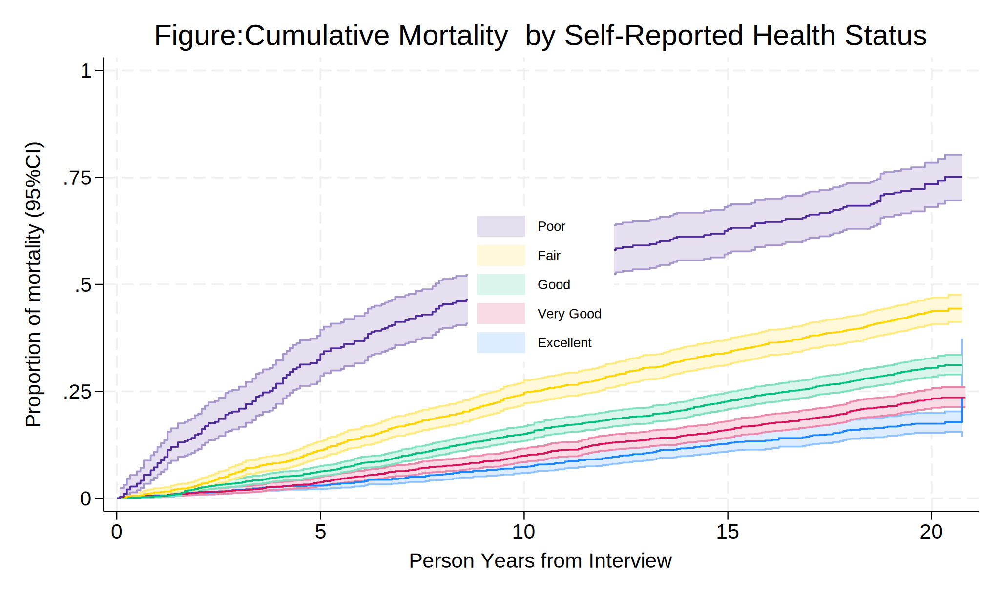
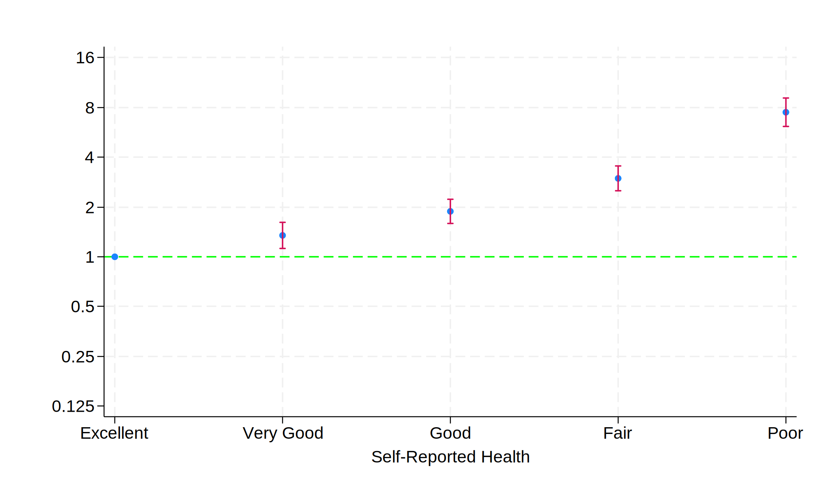
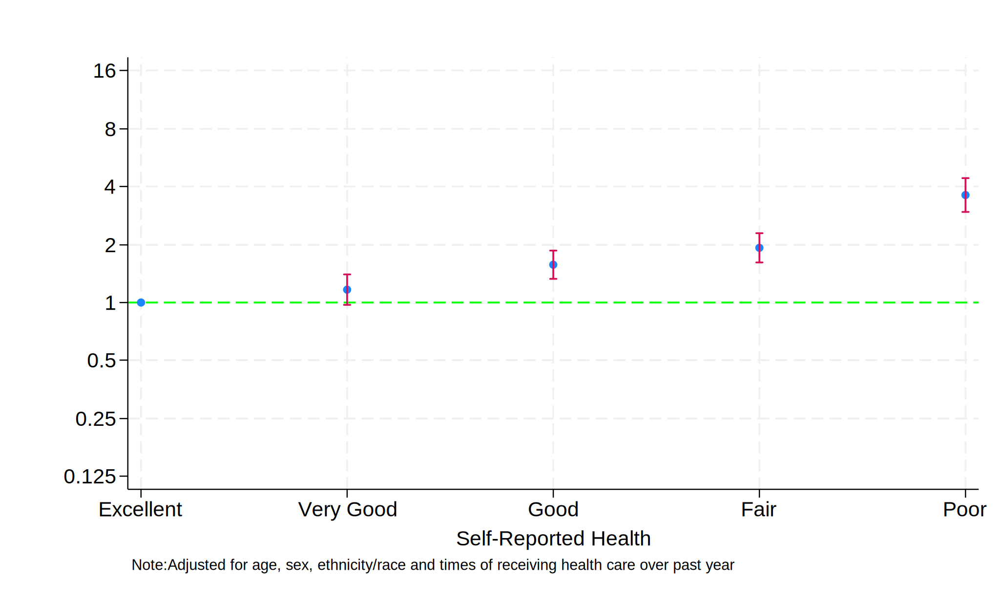
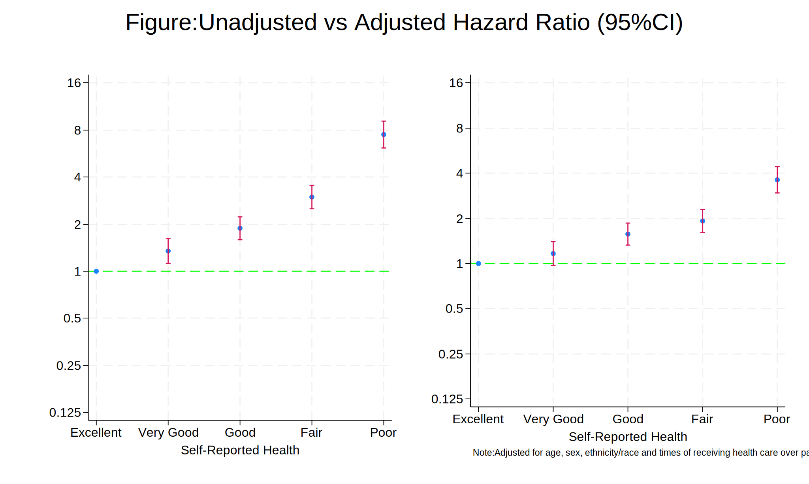
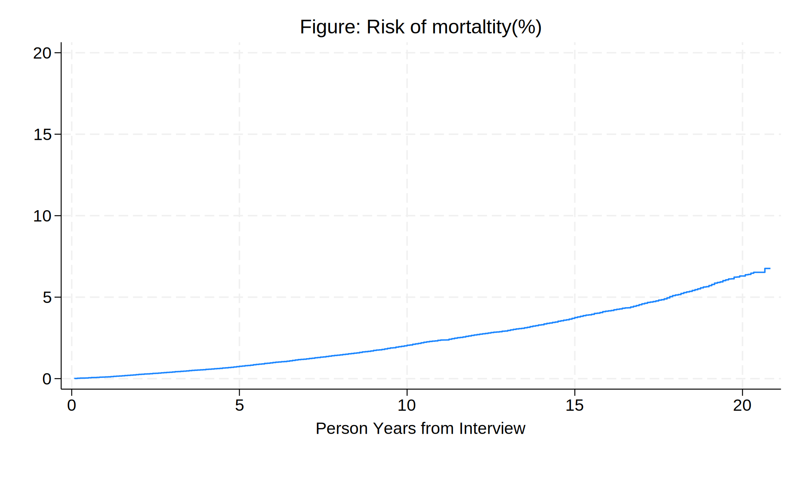

cd “C:\Users\leehy\OneDrive - Johns Hopkins\JHU BSPH Classes\Term 4 2024\Stata Intermediate\wk7”
Data Prepping*** ********************************************************************************
. ** Clear all
. cls
. clear all
.
. ** Set Working Directory
. cd "C:\Users\leehy\OneDrive - Johns Hopkins\JHU BSPH Classes\Te
> rm 4 2024\Stata Intermediate\wk6"
. pwd
.
. ** Link the datsets
. ** golbal macro for the repository path
. global repo "https://raw.githubusercontent.com/hyomin295/projec
> t/main/"
.
. ** global macro for NHANES for datasets
. global nhanes "https://wwwn.cdc.gov/Nchs/Nhanes/"
.
. ** Setting the data
. ** Run "followup.do" from repo in global path.
. do ${repo}followup.do
. save followup.dta, replace
.
. ** Import 1999-2000 survey dataset from the website and merge with
> the followup data
. //for complete variables
. import sasxport5 "${nhanes}1999-2000/DEMO.XPT", clear
. merge 1:1 seqn using followup.dta, nogen // seqn = id var
. save survey_demo.dta, replace
.
. ** Import the dataset with self-reported quality of health
. //to merge with the main survey_demo.dta
. import sasxport5 "${nhanes}1999-2000/HUQ.XPT", clear
. tab huq010
. merge 1:1 seqn using survey_demo, nogen keep(matched)
.
. ** Clear repo
. rm followup.dta
. rm survey_demo.dta
***Survival Analysis ********************************************************************************
. ** Set survival dataset using stset (followup time) fail(outcome=1) id(
> id)
. ** Create the year variable and adjust to person-years
. gen years = permth_int/12
. label var years "Person-Year FUP from NHANES interview
> date "
. sum years // 0 to 20.83 PY
. codebook years
. ** PY=0 will be omitted from survival analysis so keep as 0.5 t
> o retain
. replace years=0.5 if years==0
.
. ** Outcome variable (total mortality status)
. codebook mortstat
. tab mortstat, mi // 69% alive and 31% dead
.
. ** Exposure variable (self-reported health)
. tab huq010, mi //General health condition
. ** 5 observations in 9, replace as missing
. replace huq010=. if huq010==9
.
. ** Label self-report measure
. labe define huq010 1"Excellent" 2"Very Good" 3"Good" 4"Fair" 5"
> Poor"
. label value huq010 huq010
. tab huq010, mi
.
. ** make local for each levels, for labeling the lengends in figure
. levelsof huq010, local(numlevels)
. local i = 1 //local macro i to 1
. ** loop over each level in the list of numlevels
. foreach l of numlist `numlevels' {
.
.
. ** Stset
. stset years, fail(mortstat)
. save hw7, replace
.
Kaplan-Meier and Cox Regression* ********************************************************************************
Kaplan-Meier (non-parametric)
. * Graph by heath condition
. clear all
. use hw7, clear
.
. sts graph , fail by(huq010) ci ///
> title(Figure:Cumulative Mortality by Self-Reported Health Stat
> us, size()) ///
> legend(size(*0.65) order( 9 "Poor" 7 "Fair" 5 "Good" 3 "Very Go
> od" 1 "Excellent" ) ///
> cols(1) rows(5) position(0) region(c(*0.05)) ///
> lab(1 "$legend1"") ///
> lab(2 "$legend2"") ///
> lab(3 "$legend3"") ///
> lab(4 "$legend4"") ///
> lab(5 "$legend5"")) ///
> xtitle("Person Years from Interview", size()) ///
> ytitle("Proportion of mortality (95%CI)", size())
. graph save KM.gph, replace
.
**Figure 1. Kaplan-Meier Curve 
Cox Regression (semi-parametric) **Unadjusted
. stcox i.huq010, basesurv(s0)
.
. matrix define mat = r(table)
. ** checking table content
. matrix list mat
. ** transpose table
. matrix mat = mat'
. ** convert to dataset
. svmat mat
.
. preserve
. keep mat*
. drop if missing(mat1)
. rename (mat1 mat2 mat3 mat4 mat5 mat6 mat7 mat8 mat9)(b se z p
> ll ul df crit eform)
. capture drop x
. ** ID for each observations
. gen x=_n
. replace b=log(b)
. replace ll=log(ll)
. replace ul=log(ul)
. twoway (scatter b x) || ///
> (rcap ll ul x, ///
> yline(0, lcol(lime)) ///
> ylab( ///
> -2.08 "0.125" ///
> -1.39 "0.25" ///
> -.69 "0.5" ///
> 0 "1" ///
> .69 "2" ///
> 1.39 "4" ///
> 2.08 "8" ///
> 2.78 "16") ///
> legend(off) ///
> title(" ") ///
> ytitle(" ") ///
> xlab( ///
> 1 "$legend1" ///
> 2 "$legend2" ///
> 3 "$legend3" ///
> 4 "$legend4" ///
> 5 "$legend5") ///
> xti("Self-Reported Health") ///
> )
. graph export semipara_unadj.png, replace
. graph save semipara_unadj.gph, replace
. restore
Figure 1. Unadjusted Cox Regression, Hazard Ratio

**Adjusted Cox (age, gender, race, pregnancy, time to care, )
.
. * Variables to adjust for
. *Age
. codebook ridageyr // No missing
. hist ridageyr
. graph export nonpara.png, replace
. //replace ridageyr=ridageyr/10
.
. capture drop s0
. stcox i.huq010 ridageyr riagendr ridreth1 huq050 , basesurv(s0
> )
. return list
. matrix define mat_adj=r(table)
. matrix define mat_adj=mat_adj'
. matrix list mat_adj
. svmat mat_adj
.
. preserve
. keep mat_adj*
. drop if missing(mat_adj1)
. rename (mat_adj1 mat_adj2 mat_adj3 mat_adj4 mat_adj5 mat_adj6 m
> at_adj7 mat_adj8 mat_adj9)(b se z p ll ul df crit eform)
. gen x=_n
. replace b=log(b)
. replace ll=log(ll)
. replace ul=log(ul)
. twoway (scatter b x if inrange(x,1,5)) || ///
> (rcap ll ul x if inrange(x,1,5), ///
> yline(0, lcol(lime)) ///
> ylab( ///
> -2.08 "0.125" ///
> -1.39 "0.25" ///
> -.69 "0.5" ///
> 0 "1" ///
> .69 "2" ///
> 1.39 "4" ///
> 2.08 "8" ///
> 2.78 "16") ///
> legend(off) ///
> title(" ") ///
> note("Note:Adjusted for age, sex, ethnicity/race an
> d times of receiving health care over past year", size(*0.9)) ///
> ytitle(" ") ///
> xlab( ///
> 1 "$legend1" ///
> 2 "$legend2" ///
> 3 "$legend3" ///
> 4 "$legend4" ///
> 5 "$legend5") ///
> xti("Self-Reported Health") ///
> )
. graph export semipara_adj.png, replace
. graph save semipara_adj.gph, replace
. restore
.
Figure:Adjusted Hazard Ratio by Self-Reported Health

Comparision of Adjusted and Unadjusted Effects ( Hazard Ratio)
.
. graph combine semipara_unadj.gph semipara_adj.gph, ///
> rows(1) ///
> xcommon ti("Figure:Unadjusted vs Adjusted Hazard Ratio (95%CI)")
. graph save unadj_adj.gph, replace
.
.
.

Comment on Unadjusted Hazard Ratio (HR) Self-reported health is associated with mortality with significance. The effect size for unadjusted HR was higher than adjusted HR. Lower the self-reported health status, higher the risk or mortality.
Extracting parameters
. //
. cls
. clear all
. use hw7, clear
. replace riagendr=riagendr-1
. stcox i.huq010 ridageyr riagendr, basesurv(s0)
. keep s0 _t _t0 _st _d
. save s0, replace
. ereturn list
. matrix beta = e(b)
. matrix vcov = e(V)
. matrix SV = ( ///
> 0, ///
> 1, ///
> 0, ///
> 0, ///
> 0, ///
> 40, ///
> 1 ///
> )
. matrix SV_ref = ( ///
> 0, ///
> 1, ///
> 0, ///
> 0, ///
> 0, ///
> 60, ///
> 1 ///
> )
. //absolute risk
. matrix risk_score = SV * beta'
. matrix list risk_score
. di exp(risk_score[1,1])
. matrix var_prediction = SV * vcov * vcov'
. matrix se_prediction = sqrt(var_prediction[1,1])
.
. matrix risk_score_ref = SV_ref * beta'
. matrix list risk_score_ref
. di exp(risk_score_ref[1,1])
. matrix var_prediction_ref = SV_ref * vcov * vcov'
. matrix se_prediction_ref = sqrt(var_prediction_ref[1,1])
.
. local hr = exp(risk_score_ref[1,1])/exp(risk_score[1,1])
. di `hr'
.
. //di "We conclude that `exp(risk_score[1,1])'"
.
. //
. gen f0 = (1 - s0) * 100
. gen f1_ = f0 * exp(risk_score[1,1])
.
. line f1 _t , ///
> sort connect(step step) ///
> legend(ring(0)) ///
> ylab(0(5)20) xlab(0(5)20) ///
> yti("") ///
> ti("Figure: Risk of mortaltity(%)", size(*0.85)pos()) ///
> xti("Person Years from Interview") ///
> note(" " ,size() ///
> )
. graph save scenario.png, replace
.
.
